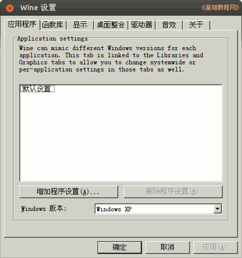

2014-2015 第二学期八年级Flash动画制作教学设计
作者：TeliuTe 来源：基础教程网
一、安装flash8动画软件 返回目录 下一课
（一）教学设计
1、学习目标：
2、注意事项：绕过弯来，既不要跳也不要落，一楼过了二楼
3、教学过程：
1）教师准备学案和板书；
2）学生整队进入，开机抄黑板上笔记；
3）教师讲解板书演示操作；
4）学生打指法、日志、完成操作；
5）教师打勾记录学生指法成绩，检查日志和操作；
注：学生抄完笔记就开始打指法、日志，老师讲完后再继续完成；
（二）板书设计(学生笔记)
29安装flash8
1.校园网，软件下载，win里，打开flash8
2.打开主文件夹：查看，显示隐藏
3.找到.wine，进入drive，win
4.把flash8拖到文件夹里
操作图示：

（三）课后记
第1课 安装flash8动画软件
1.校园网，软件下载，win，flash
2.主文件夹，点“查看，显示隐藏”
3.依次找到.wine，drive，win
4.解压flash8拖入文件夹，绿化，flash
--
--
找路径太麻烦，如果每节课都找的话有点费时间了
把生成快捷方式的也运行一下，这样就可以直接用下次
--
把文件夹也建好，这样保存的时候，可以复习一下名称
名称里面有个@绿化，也用一个@flash，挨着在一起
--
第一课做好准备，练习一下基本的方法，
保存，和测试，这些看情况来定，如果前面的比较好
--
把背景设置说一下也可以，界面的大致名称
工具箱，帧面板，工作区等等基本名词
返回目录 下一课
本教程由86团学校TeliuTe制作|著作权所有
基础教程网：http://teliute.org/
美丽的校园……
转载和引用本站内容，请保留作者和本站链接。